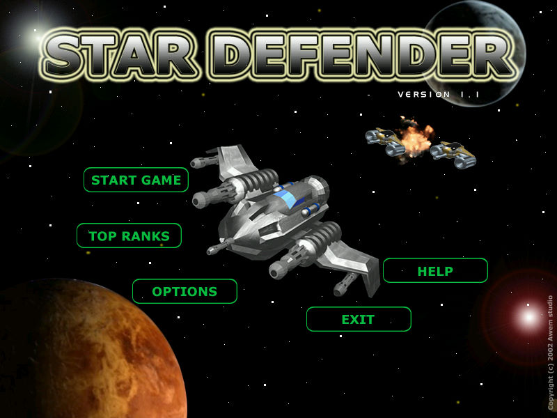
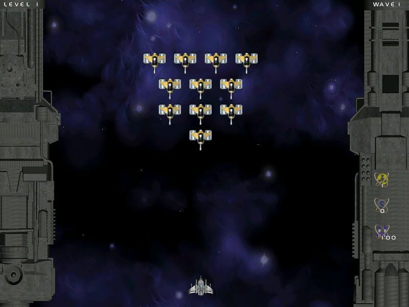

名稱：星際大作戰／星際衛士 (Star Defender，英文版)
簡介：Awem 2002年出品的清版射擊遊戲，2003年由新造科技中文化並代理發行，不過也只是
加上中文化的安裝程式，實際遊戲內容仍然是英文 [待補]。


保護：無
備註：新造科技代理版為1.1版。
備註：如果覺得遊戲速度過快，要到OPTIONS裡調低GAME SPEED。
操作：只支援滑鼠，左右鍵各控制一種武器射擊，按著可連發。
說明：
1.右邊指示圖最上方表示生命值，被擊中時減一，歸零則遊戲結束。
2.右邊指示圖最下方表示滑鼠右鍵的剩餘彈藥量。